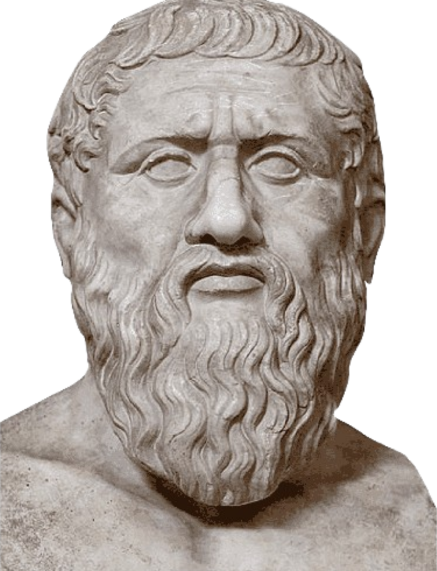

Período Pré-socrático (do século VII ao século V a.C.)
Os principais filósofos pré-socráticos incluem Tales, Anaximandro, Anaxímenes, Heráclito, Parmênides, Empédocles e Demócrito.
Tales é conhecido por considerar a água como o princípio fundamental. Anaximandro introduziu o conceito do "ápeiron" (infinito), enquanto Anaxímenes via o ar
como o princípio. Heráclito destacou a mudança e o fogo como elementos essenciais, contrastando com Parmênides, que defendia a ideia de um ser imutável.
Empédocles propôs a combinação de quatro elementos (terra, água, ar, fogo), e Demócrito é famoso por desenvolver a teoria atomista.

|
Tales (625 a.C.) foi o primeiro filósofo do Ocidente. Nasceu na cidade de Mileto, aproximadamente no ano 625 a.C.
Essa cidade ficava na região da Jônia, localizada na Ásia Menor.
A Escola Jônica, a que Tales pertencia, era composta por Tales e outros filósofos da Jônia, como Anaximandro e Anaxímenes.
Como a Grécia ainda não era unificada, a região grega era composta por várias cidades independentes. A região da Jônia, onde ficava Mileto, hoje compreende ao
território da Turquia.
|

|
Anaximandro (610 a.C.) nasceu na cidade de Mileto, região da Jônia (atual Turquia), uma porção de terras pertencida ao território da Ásia Menor. O filósofo, astrônomo e geógrafo grego conheceu Tales, considerado o primeiro filósofo grego, quem
influenciou o seu pensamento. Anaximandro continuou a busca pela origem do Universo (cosmologia) de Tales, em contraposição às doutrinas
mitológicas, que explicavam o surgimento de tudo de maneira fantasiosa.
|

|
Anaxímenes (585-524 a.C.) foi um filósofo grego do período pré-socrático que dizia que o ar era o princípio gerador e regulador de todas as coisas.
Com sua teoria sobre condensação e rarefação, contribuiu para o avanço do pensamento científico.
Anaxímenes de Mileto nasceu na colônia grega de Mileto, na Ásia Menor (atual Turquia), durante o Período Arcaico –
período da Grécia Antiga situado entre a Idade das Trevas e o Período Clássico.
|
|
|
Heráclito (540-470 a.C.) foi um filósofo pré-socrático da Ásia Menor. Escreveu com extrema complexidade a respeito da ciência, da teologia e das relações
humanas. Foi considerado o precursor da dialética e um dos fundadores da metafísica.
Heráclito de Éfeso ridicularizava os cultos e ritos de seu povo e, por ter um estilo de difícil compreensão, foi cognominado
“o obscuro”.
|

|
Parmênides (515 a.C.) Nasceu na cidade de Eleia, região da Magna Grécia (atualmente sul da Itália).
Ele continuou a filosofia de Xenófanes, aprofundando a teoria sobre uma unidade que sustentaria toda a criação.
O terceiro filósofo da Escola Eleata foi Zenão de Eleia, que formulou uma série de paradoxos sobre o movimento para reafirmar a teoria de Parmênides,
mostrando que o movimento era apenas uma aparência que engana os nossos sentidos.
|
|
|
Empédocles (495 a.C-430 a.C.) foi um filósofo grego pré-socrático. Afirmava que todas as coisas eram terra, ar, água e fogo, misturados
ou isolados. Visto na antiguidade como profeta e mago, foi também político, orador e poeta. Empédocles de Agrigento nasceu em Agrigento,
na Sicília, na época, colônia grega, no ano de 495 a.C. De família rica e ilustre era um sábio extremamente versátil.
Foi ao mesmo tempo filósofo, físico, astrônomo, e médico. Foi também legislador e poeta.
|

|
Demócrito (460-370 a.C.) foi um filósofo grego do período pré-socrático e agrupado na escola atomista, pois julgava que todos os elementos
do universo eram compostos de átomos.
Depois de séculos de esquecimento, a teoria do atomismo, formulada no século V a. C., recuperou a importância em virtude das interpretações mecanicistas
do mundo surgidas no século XVII.
Demócrito de Abdera nasceu em Abdera, na Grécia, por volta de 460 a.C. Descendente de família nobre, aprofundou seus conhecimentos viajando por diversas
cidades.
|
Período Socrático (do século V ao século IV a.C.)
Chegamos em uma era fundamental da filosofia com os filósofos socráticos, aqueles que, com suas perguntas profundas e ensinamentos,
redefiniram o modo como entendemos a ética, a política e o conhecimento. Sócrates, o mentor do questionamento incessante,
não deixou escritos, mas seus diálogos transformaram a filosofia ao focar na busca da verdade e na importância da ética.
Discípulo de Sócrates, Platão fundou a Academia de Atenas e escreveu inúmeros diálogos que exploram tópicos desde a justiça até
a natureza da realidade. Seu conceito de "Mundo das Ideias" ainda ressoa na filosofia contemporânea. Outro discípulo de Sócrates,
Xenofonte é conhecido por suas memórias sobre Sócrates e suas obras históricas. Suas lembranças oferecem uma perspectiva mais prática
e pragmática do pensamento socrático. Aluno de Platão e fundador do Liceu, Aristóteles escreveu sobre praticamente todos os campos
do conhecimento. Sua abordagem empírica e lógica influenciou a ciência e a filosofia ocidentais por séculos.

|
Sócrates (470-399a.C.) foi um filósofo da Grécia antiga. Ao lado de Platão e Aristóteles, é um dos principais filósofos da Antiguidade,
cujas ideias estabeleceram os fundamentos filosóficos da cultura ocidental. “Conhece-te a ti mesmo” é a essência de todo seu ensinamento.
Sócrates nasceu em Atenas, na Grécia, mas especificamente na região das planícies do norte Licabeto, no ano de 470 a.C. Seu pai era um escultor
e pedreiro, e sua mãe era parteira. Nada se sabe de sua infância. Em sua juventude, tomou parte de três campanhas militares.
|
|

|
Platão (427-347 a.C.) foi um filósofo grego da antiguidade, considerado um dos principais pensadores da história da
filosofia. Era discípulo do filósofo Sócrates. Sua filosofia é baseada na teoria de que o mundo que percebemos com nossos
sentidos é um mundo ilusório, confuso. O mundo espiritual é mais elevado, eterno, e o que existe verdadeiramente são as
ideias, que só a razão pode conhecer.
|
|
|
Xenofonte (430 a.C.-355 a.C.) foi um historiador, filósofo e general grego. Foi um dos discípulos de Sócrates.
Relatou em suas obras, diversos fatos importantes para a reconstituição histórica da época. Ele nasceu em Erkhia,
perto de Atenas, na Grécia, no ano de 430 a.C. Filho de uma família abastada e influente, em sua juventude conviveu
com Sócrates e se tornou seu discípulo. Cresceu numa época em que as cidades gregas viviam numa grave crise interna
procurando impor seus interesses econômicos e suas concepções políticas.
|

|
Aristóteles (384-322 a.C.) foi um importante filósofo grego, um dos pensadores com maior influência na cultura
ocidental. Foi discípulo do filósofo Platão. Elaborou um sistema filosófico que abordou sobre praticamente
todos os assuntos existentes, como a geometria, física, metafísica, botânica, zoologia, astronomia, medicina,
psicologia, ética, drama, poesia, retórica, matemática e principalmente lógica. Aristóteles nasceu em Estagira,
na Trácia, Macedônia, situada no norte da Grécia, no ano de 384 a.C. Filho de Nicômaco, médico do rei Amintas III,
e da parteira Phaéstis, recebeu sólida formação em Ciências Naturais.
|